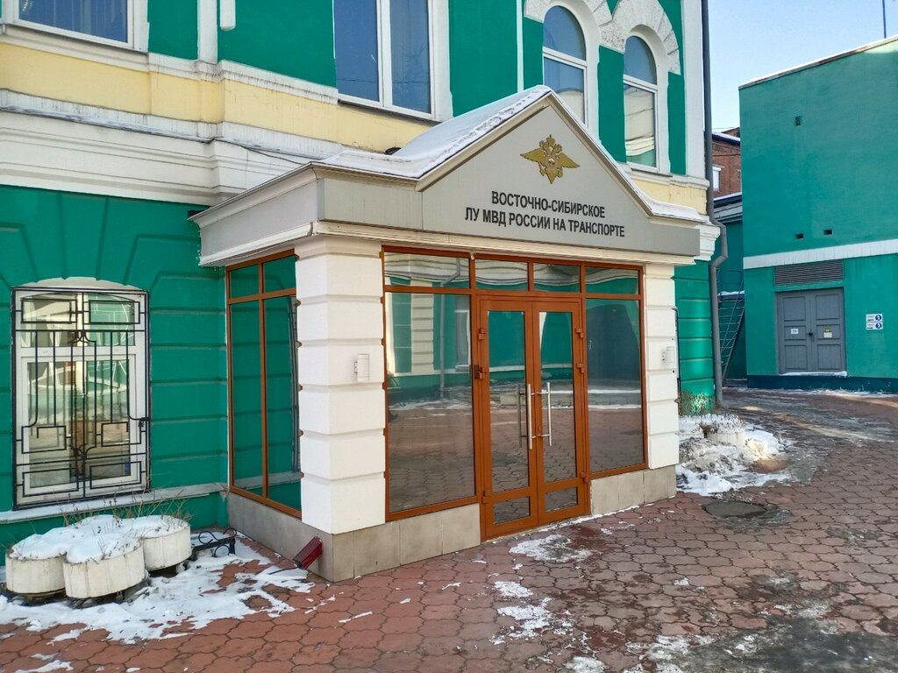

Восточно-Сибирское Линейное управление МВД России на транспорте

Информационный центр является структурным подразделением ВС ЛУ МВД России.
Согласно правовому положению и организационному построению информационных центров МВД России, основными задачами и функциями деятельности являются:
- ведение в установленном порядке банков данных (систем данных) оперативно–справочной, розыскной, криминалистической, статистической и иной информации;
- формирование архивных фондов, осуществление хранения, комплектования, учета, обработки архивных документов, образовавшихся в деятельности структурных подразделений Управления;
- оказание государственных услуг в целях обеспечения реализации предусмотренных законодательством Российской Федерации полномочий органов внутренних дел Российской Федерации по выдаче архивных справок.
- осуществление сбора, накопления, обработки статистической информации о состоянии преступности и результатах оперативно-служебной деятельности Восточно–Сибирского ЛУ МВД России на транспорте для формирования межведомственных статистических баз данных, оперативно-справочной, дактилоскопической, розыскной, криминалистической, архивной и иной информации с использованием средств вычислительной техники, а также телекоммуникационных и шифровальных (криптографических) средств.
- выдача в установленном порядке федеральным органам исполнительной власти, органам исполнительной власти субъектов Российской Федерации, государственным органам и органам местного самоуправления, расположенных на территории Восточной Сибири, запрашиваемой информации.
- формирование и ведение в установленном порядке учета документов и дел, образующихся в процессе оперативно-розыскной деятельности оперативных подразделений ВС ЛУ МВД России на транспорте.